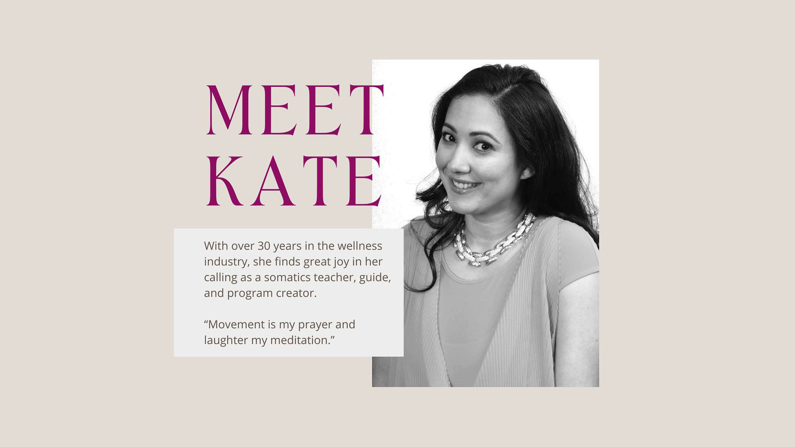
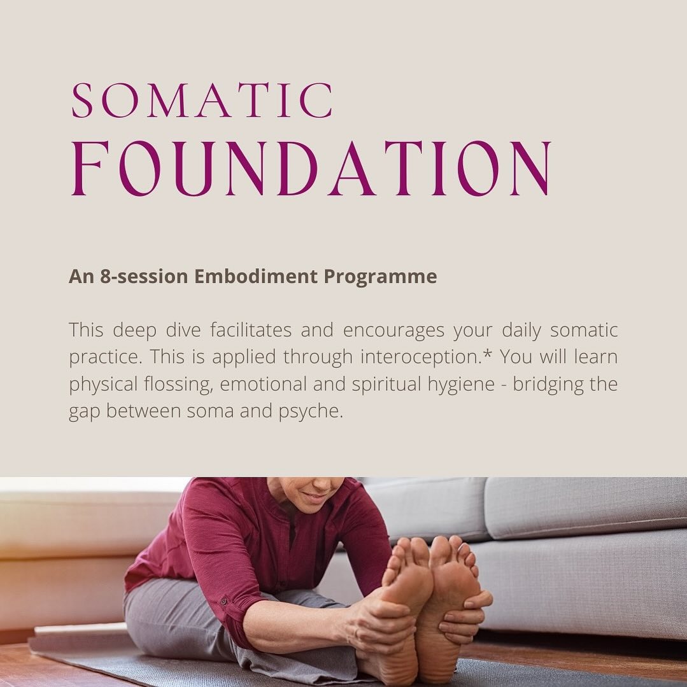

Somatic Wellness
Move.
Feel.
Heal.
Reconnect with the intelligence of your body through intentional somatic movement, breath, and embodied presence.


About Us
Your body holds
all the answers.
Somatics.ph is a wellness practice rooted in the art of listening — to the subtle language your body speaks beneath thought, habit, and tension.
We blend somatic movement education, breathwork, and embodied mindfulness to help individuals release chronic patterns, recover from stress, and rediscover ease in daily life.
Founded in Manila, we work with individuals, couples, and groups both in-person and online — meeting you wherever you are in your journey.
What We Offer
Pathways to
embodied wellbeing
Somatic Movement
Gentle, exploratory movement sessions that re-educate your nervous system and release deeply held muscular patterns. Suitable for all bodies and abilities.
Explore →Breathwork Sessions
Guided conscious breathing practices to regulate your nervous system, move stagnant emotion, and arrive fully present in your body and life.
Explore →Group Classes
Weekly and monthly group sessions exploring movement, breath, and collective embodiment. A supportive community for your somatic journey.
Explore →1-on-1 Sessions
Deeply personalised one-to-one work tailored to your specific history, needs, and goals — in person in Manila or online from anywhere.
Explore →Workshops & Retreats
Immersive day and multi-day experiences deepening your relationship with your body, held in beautiful spaces across the Philippines.
Explore →Online Programs
Self-paced and live online courses bringing the depth of somatic practice to wherever you are in the world.
Explore →
The body
remembers
everything.
Our Philosophy
Healing lives
below the mind
Most wellness approaches work from the top down — thinking, analysing, planning. Somatics begins at the other end: with sensation, impulse, and the lived experience of being embodied.
We draw from the traditions of Thomas Hanna's Somatic Education, the Feldenkrais Method, Continuum Movement, and trauma-informed bodywork — weaving these lineages into a practice that is both rigorous and deeply compassionate.
Your nervous system is not broken. It is brilliantly adaptive. Our work is to expand what it knows is safe.
We believe every body is inherently wise, and that lasting change emerges not from willpower but from felt experience — small, gentle discoveries that reorganise how you move through life.
The People
Practitioners who
walk the path too

Maria Aguirre
Founder · Somatic Educator
Certified in Hanna Somatics and Feldenkrais, Maria has guided hundreds of people back into their bodies over a decade of practice in Manila and internationally.

Jose Reyes
Breathwork Facilitator
Jose holds a decade of experience in conscious connected breathing, combining clinical training with the depth of contemplative practice.

Sofia Lim
Movement Coach
Sofia weaves yoga, dance, and somatic movement into sessions that are both precise and playful — helping clients find freedom in their bodies.
Voices
What our clients
experience
Ready to begin?
A first session is a conversation. No commitment needed — just curiosity.